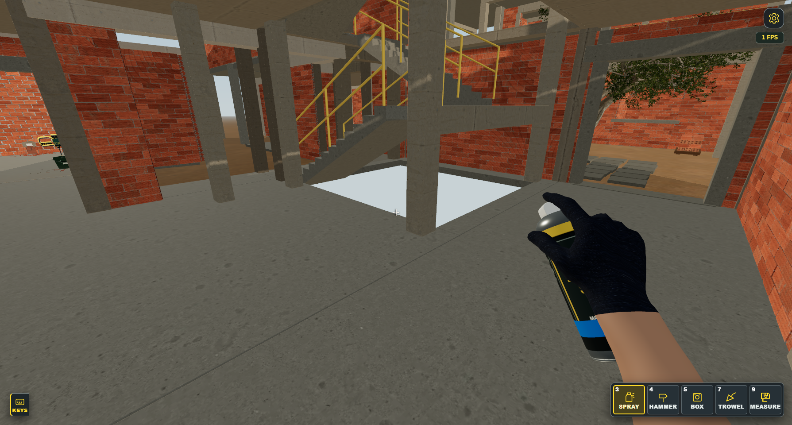
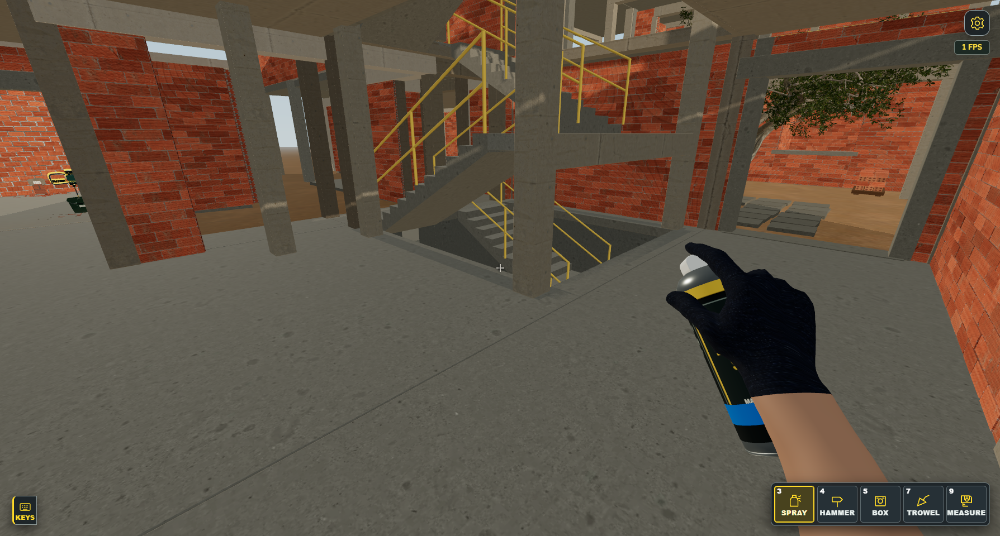

Το άνοιγμα της σκάλας προς το υπόγειο
Πραγματικές εικόνες από την ίδια θέση, με την ίδια κάμερα και ανάλυση. Το άνοιγμα παραμένει ελεύθερο και οι κάτω σκάλες και επιφάνειες παραμένουν ορατές.
Πριν

Το παιχνίδι έκρυβε τη σκάλα και τις επιφάνειες που φαίνονται μέσα από το άνοιγμα.
Μετά

Η κάτω σκάλα και το περίβλημα του ανοίγματος εμφανίζονται κανονικά.
Οι εικόνες ελέγχουν την ορατότητα, όχι την απόδοση του κινητού. Η ένδειξη FPS μέσα στα screenshots δεν αποτελεί μέτρηση αυτής της σύγκρισης.